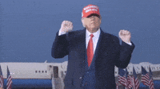
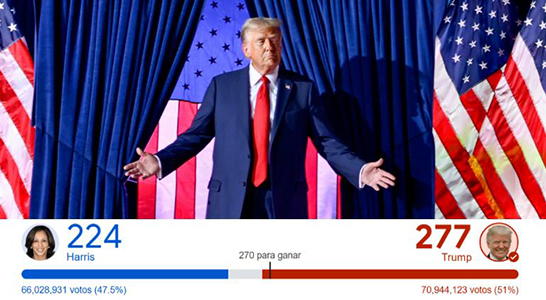

DONALD TRUMP GANA POR 277 VOTOS LAS ELECCIONES DE ESTADOS UNIDOS 2024.
Autor: Alexander Calderon
Fecha: 09 de noviembre de 2024
BAILE DE VICTORIA EN LA CASA BLANCA

Donald Trump festejó con un baile peculiar su victoria sorpresiva en las elecciones presidenciales de Estados Unidos de 2024, logrando su regreso a la Casa Blanca juntando el senado a su favor, después de un período de controversias y una entretenida competencia electoral en las redes sociales. Con un enfoque renovado en sus políticas populistas y un fuerte apoyo de su base por parte de sus seguidores, Trump ha logrado superar a sus rivales en una de las tiendas más polarizadas de la historia reciente de los Estados Unidos. Este triunfo marca un precedente en la política estadounidense, generando expectativas sobre el rumbo que tomará el país bajo la mano del empresario Donald Trump.
VOTOS INESPERADOS
Con un total de 277 votos electorales, Trump ganó estados clave como Ohio, Texas, Florida y Carolina del Sur, lo que le permitió alcanzar el objetivo necesario para ganar la presidencia. A pesar de que las encuestas indicaban una competencia cerrada, la estrategia de Trump de centrarse en las regiones con dificultades económicas y de captar a votantes desilusionados con el sistema político tradicional resultó efectiva, además de tener una fuerte campaña en redes sociales, entendiendo como funciona. la comunicación digital a la perfección. Es un hombre que es especialista en interpretar los puntos fuertes en su campaña electoral, potencialmente con el uso de las plataformas digitales. Esta victoria no solo le asegura un regreso a la Casa Blanca, sino que también fortalece el control republicano sobre el Senado, otorgándole un poder sigificativo para su agenda legislativa en la toma de decisiones. El resultado refleja un profundo rechazo hacia las políticas de la administración demócrata, especialmente en áreas afectadas por la inflación y la crisis económica, donde Trump logró recuperar el apoyo entre las clases trabajadoras, los inmigrantes que ya cuentan con documentación estadounidense, los cuales normalmente votaban por los demócratas. La jornada electoral fue seguida de cerca por el mundo entero, con importantes figuras políticas, el presidente saliente Joe Biden, felicitó a Trump expresando su compromiso con una transición pacífica del poder. Este suceso marca un precedente en la política estadounidense, y el nuevo gobierno de Trump enfrentará desafíos tanto internos como externos mientras intenta consolidar su base de apoyo y abordar los temas que más preocupan en el territorio global.